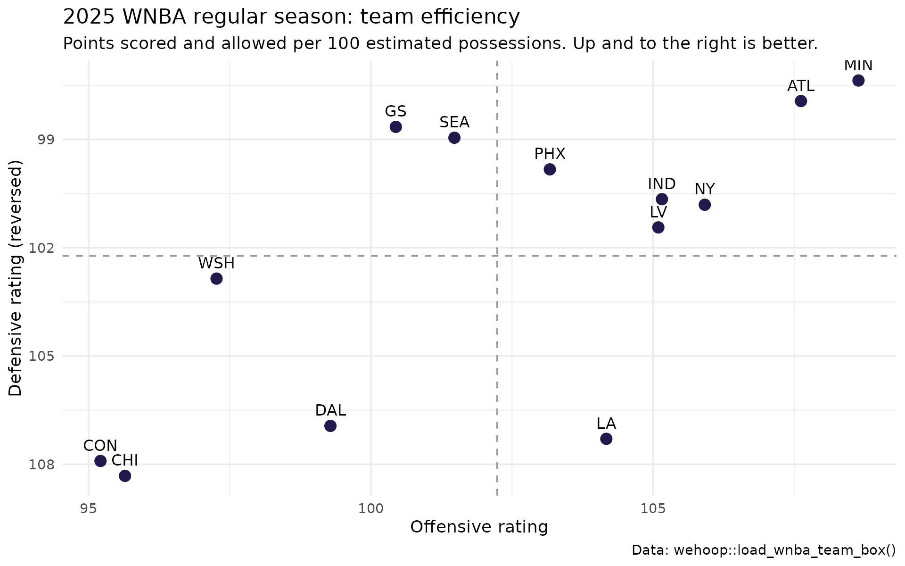

Getting Started with wehoop: WNBA and Women's College Basketball Data in R
Saiem Gilani,
Geoffery Hutchinson


Source: vignettes/getting-started-wehoop.Rmd
getting-started-wehoop.Rmdwehoop is an R package for women’s basketball
data: the WNBA, NCAA women’s college basketball, and a growing list of
women’s leagues and national team competitions around the
world. It gives you two ways in. Release loaders
(load_*()) download whole seasons of pre-built
play-by-play, box scores and model outputs in seconds. Live wrappers
(espn_*(), wnba_*(), and the international
families) call a source directly when you need today’s game or a dataset
nobody has pre-built.
This guide is for students and newcomers. It assumes no prior experience with sports data and only a little R.
What you’ll learn
- How to install
wehoopand the packages used in this guide. - How the function names map to data sources, so you can guess the function you need.
- How to load a full WNBA season of team box scores and play-by-play.
- How to turn a box score into a team statistic and draw your first
chart with
ggplot2. - The basketball analytics vocabulary (possessions, pace, ratings, true shooting and the rest) used across the other articles.
- Where to go next.
How do I install wehoop?
wehoop needs R 4.1.0 or newer. If you are starting from
zero, install R from CRAN and
then the free RStudio Desktop
editor. Windows users should also install Rtools, which
R uses to build packages from source.
Then install the package. The CRAN release is the stable choice. The GitHub version gets new data sources first.
# CRAN release
install.packages("wehoop")
# Development version from GitHub
if (!requireNamespace("pak", quietly = TRUE)) install.packages("pak")
pak::pak("sportsdataverse/wehoop")
# Packages used in the examples below
install.packages(c("dplyr", "ggplot2", "tidyr"))A few loaders read Apache Parquet files. They need the
arrow package (install.packages("arrow")). The
functions that fit a RAPM model need glmnet and
Matrix.
Which function reads which source?
The prefix of a function name tells you where its data comes from.
Learn the prefixes and the rest of the package becomes guessable:
espn_wnba_pbp() and espn_wbb_pbp() take the
same arguments and return the same columns, one for the WNBA and one for
women’s college basketball.
| Prefix | Source | What you get | Network call? |
|---|---|---|---|
load_wnba_*() |
sportsdataverse GitHub releases (ESPN-derived) | Whole WNBA seasons: play-by-play, team and player box scores, schedules, rosters, shots, officials | Downloads a pre-built file |
load_wbb_*() |
sportsdataverse GitHub releases (ESPN-derived) | The same tables for NCAA women’s college basketball, plus
load_wbb_ratings() and
load_wbb_player_value()
|
Downloads a pre-built file |
load_wnba_stats_*() |
sportsdataverse GitHub releases (WNBA Stats API-derived) | WNBA Stats schedules, play-by-play, shots, lineups, league dashboards, possessions | Downloads a pre-built file |
load_ncaa_wbb_*() |
sportsdataverse GitHub releases (stats.ncaa.org-derived) | NCAA play-by-play, shots, lineups, stints, possessions, RAPM | Downloads a pre-built file |
espn_wnba_*(), espn_wbb_*()
|
ESPN site and core APIs | Live scoreboards, games, rosters, athletes, standings, odds, news | Yes |
wnba_*() |
WNBA Stats API (stats.wnba.com) | Deep WNBA stats: league dashboards, hustle, tracking, lineups, shot charts | Yes |
ncaa_wbb_*() |
NCAA.com | NET rankings and the team list | Yes |
fox_*() |
Fox Sports | WNBA and WBB scores, box scores, play-by-play | Yes |
bref_wnba_*(), hhs_*(),
bart_wbb_*()
|
Basketball-Reference, Her Hoop Stats (subscription), Bart Torvik | Season tables and ratings | Yes |
fiba_*(), genius_*(),
atrium_*(), nbl_rosetta_*(),
scb_*(), feb_*(), tbf_*(),
wjbl_*(), wbbl_*(), lfb_*(),
… |
International league and federation feeds | Women’s World Cup, Olympics, EuroLeague Women, WNBL, W League and more | Yes |
The full list, grouped by family, is the function reference. Jump straight to a group:
- Release loaders (wehoop Data): WNBA, women’s college, WNBA Stats API, NCAA play-by-play engine, and model datasets.
- ESPN live wrappers.
- WNBA Stats API live wrappers.
- NCAA.com.
- International basketball.
Release loaders or live wrappers?
Reach for a load_*() function whenever you want history.
It reads one file per season from a public GitHub release, so a full
season arrives in seconds and you never hit a rate limit. Every loader
takes a seasons argument: a single year, a vector such as
2022:2025, or TRUE for every published
season.
Reach for a live wrapper when you need a game that finished an hour ago, or a dataset that is not pre-built. Live wrappers are slower, and the sources behind them can throttle you if you loop over hundreds of requests.
A season is labelled by the calendar year for the WNBA
(2025 is the 2025 season) and by the
ending year for college (2026 is the
2025-26 season). most_recent_wnba_season() and
most_recent_wbb_season() return the current label.
A first worked example: a WNBA season in five minutes
This guide uses the 2025 WNBA season, the most recent one with a full regular season and playoffs at the time of writing.
wnba_season <- 2025Load the team box scores
load_wnba_team_box() returns one row per team per
game.
team_box <- load_wnba_team_box(seasons = wnba_season)
dim(team_box)
#> [1] 624 57
team_box |>
select(game_date, team_abbreviation, team_score,
opponent_team_abbreviation, opponent_team_score, season_type) |>
head()
#> # A tibble: 6 × 6
#> game_date team_abbreviation team_score opponent_team_abbreviation
#> <date> <chr> <int> <chr>
#> 1 2025-10-10 LV 97 PHX
#> 2 2025-10-10 PHX 86 LV
#> 3 2025-10-08 LV 90 PHX
#> 4 2025-10-08 PHX 88 LV
#> 5 2025-10-05 PHX 78 LV
#> 6 2025-10-05 LV 91 PHX
#> # ℹ 2 more variables: opponent_team_score <int>, season_type <int>season_type is 2 for the regular season and
3 for the playoffs. Each game appears twice, once from each
team’s side, which is why opponent_* columns sit next to
the team’s own. The release covers 312 games for 2025.
Compute a team statistic
Raw points per game mixes two things: how efficient a team is, and how many chances it gets. Analysts separate them by counting possessions, the number of times a team has the ball. A box score does not record possessions directly, so we estimate them from field goal attempts, offensive rebounds, turnovers and free throw attempts (the formula is in the glossary). Points per 100 possessions is called offensive rating.
team_ratings <- team_box |>
filter(season_type == 2) |>
mutate(
possessions = field_goals_attempted - offensive_rebounds +
turnovers + 0.44 * free_throws_attempted
) |>
group_by(team_abbreviation) |>
summarise(
games = n(),
points = sum(team_score),
points_allowed = sum(opponent_team_score),
possessions = sum(possessions),
.groups = "drop"
) |>
# The All-Star Game is filed as a regular-season game between two
# one-off "teams"; keep only the real franchises.
filter(games >= 20) |>
mutate(
off_rating = 100 * points / possessions,
def_rating = 100 * points_allowed / possessions,
net_rating = off_rating - def_rating
) |>
arrange(desc(net_rating))
team_ratings
#> # A tibble: 13 × 8
#> team_abbreviation games points points_allowed possessions off_rating
#> <chr> <int> <int> <int> <dbl> <dbl>
#> 1 MIN 45 3846 3447 3540. 109.
#> 2 ATL 44 3712 3378 3449. 108.
#> 3 NY 44 3713 3534 3506. 106.
#> 4 IND 45 3808 3645 3621. 105.
#> 5 LV 44 3680 3552 3502. 105.
#> 6 PHX 44 3643 3525 3531. 103.
#> 7 SEA 44 3614 3524 3561. 101.
#> 8 GS 44 3420 3359 3405. 100.
#> 9 LA 44 3769 3882 3618. 104.
#> 10 WSH 44 3394 3589 3489. 97.3
#> 11 DAL 44 3594 3871 3620. 99.3
#> 12 CHI 44 3335 3777 3487. 95.6
#> 13 CON 44 3337 3782 3505. 95.2
#> # ℹ 2 more variables: def_rating <dbl>, net_rating <dbl>(We use the team’s own possessions as the denominator for both ratings. Both teams have nearly the same number of possessions in a game, so the difference is small. The advanced metrics article covers the refinements.)
Draw your first chart
ggplot(team_ratings, aes(off_rating, def_rating)) +
geom_hline(yintercept = mean(team_ratings$def_rating), linetype = "dashed", color = "grey60") +
geom_vline(xintercept = mean(team_ratings$off_rating), linetype = "dashed", color = "grey60") +
geom_point(size = 3, color = "#221A4D") +
geom_text(aes(label = team_abbreviation), vjust = -0.9, size = 3.5) +
scale_y_reverse() +
labs(
title = paste(wnba_season, "WNBA regular season: team efficiency"),
subtitle = "Points scored and allowed per 100 estimated possessions. Up and to the right is better.",
x = "Offensive rating", y = "Defensive rating (reversed)",
caption = "Data: wehoop::load_wnba_team_box()"
) +
theme_minimal()
Teams in the top-right quadrant score efficiently and defend well.
Load play-by-play
Play-by-play (often shortened to pbp) has one row per event: every shot, rebound, foul, turnover, substitution and timeout, with the clock and score at that moment.
pbp <- load_wnba_pbp(seasons = wnba_season)
nrow(pbp)
#> [1] 121342
length(unique(pbp$game_id))
#> [1] 312
pbp |>
select(game_id, period_number, clock_display_value, type_text,
scoring_play, score_value, home_score, away_score) |>
head()
#> # A tibble: 6 × 8
#> game_id period_number clock_display_value type_text scoring_play score_value
#> <int> <int> <chr> <chr> <lgl> <int>
#> 1 401820329 1 10:00 Jumpball FALSE 0
#> 2 401820329 1 9:48 Pullup J… FALSE 0
#> 3 401820329 1 9:45 Defensiv… FALSE 0
#> 4 401820329 1 9:28 Layup Sh… FALSE 0
#> 5 401820329 1 9:22 Offensiv… FALSE 0
#> 6 401820329 1 9:21 Layup Sh… TRUE 2
#> # ℹ 2 more variables: home_score <int>, away_score <int>A quick question pbp can answer and a box score cannot: when in the game do points get scored?
pbp |>
filter(scoring_play == TRUE, period_number <= 4) |>
group_by(period_number) |>
summarise(points = sum(score_value), games = n_distinct(game_id), .groups = "drop") |>
mutate(points_per_game = points / games)
#> # A tibble: 4 × 4
#> period_number points games points_per_game
#> <int> <int> <int> <dbl>
#> 1 1 12988 312 41.6
#> 2 2 12632 312 40.5
#> 3 3 12966 312 41.6
#> 4 4 12318 312 39.5The pbp table also carries game_spread,
home_favorite, game_spread_available and
home_team_spread. In the current releases these columns
hold a placeholder value, not a real market line, so leave them out of
any analysis.
Load player box scores
player_box <- load_wnba_player_box(seasons = wnba_season)
player_box |>
filter(season_type == 2, did_not_play == FALSE) |>
group_by(athlete_display_name, team_abbreviation) |>
summarise(
games = n(),
ppg = mean(points, na.rm = TRUE),
rpg = mean(rebounds, na.rm = TRUE),
apg = mean(assists, na.rm = TRUE),
.groups = "drop"
) |>
filter(games >= 20) |>
arrange(desc(ppg)) |>
head(10)
#> # A tibble: 10 × 6
#> athlete_display_name team_abbreviation games ppg rpg apg
#> <chr> <chr> <int> <dbl> <dbl> <dbl>
#> 1 A'ja Wilson LV 40 23.4 10.2 3.05
#> 2 Napheesa Collier MIN 34 22.6 7.35 3.18
#> 3 Kelsey Mitchell IND 45 20.0 1.73 3.4
#> 4 Kelsey Plum LA 43 19.5 3.07 5.74
#> 5 Paige Bueckers DAL 36 19.2 3.94 5.39
#> 6 Dearica Hamby LA 44 18.4 7.93 3.27
#> 7 Allisha Gray ATL 42 18.4 5.31 3.5
#> 8 Breanna Stewart NY 31 18.3 6.55 3.48
#> 9 Nneka Ogwumike SEA 44 18.2 7.02 2.25
#> 10 Sabrina Ionescu NY 38 18.2 4.87 5.68The same code works for college
Swap wnba for wbb and use a college season
label. The tables are larger: Division I has more than 360 teams and
plays several thousand games a season.
wbb_team_box <- load_wbb_team_box(seasons = 2026)
wbb_pbp <- load_wbb_pbp(seasons = 2026)Live data for a single game
When a game has just finished, the live ESPN wrappers return it straight from the source. These calls need a network connection, so they are not run here.
# Today's WNBA scoreboard
espn_wnba_scoreboard(season = format(Sys.Date(), "%Y%m%d"))
# Play-by-play, team box and player box for one game in a single list
game <- espn_wnba_game_all(game_id = "401736171")
names(game)
# A college team's roster (UConn, ESPN team id 2509)
espn_wbb_team_roster(team_id = 2509, season = 2026)The ESPN endpoints article is a
tour of every ESPN wrapper. The WNBA Stats API wrappers
(wnba_*()) take more parameters; the parameter descriptions table
explains each one.
Glossary
These terms appear throughout the wehoop articles.
Formulas use box score abbreviations: FGA field goal attempts, FGM
makes, 3PM three-pointers made, FTA free throw attempts, OREB and DREB
offensive and defensive rebounds, TOV turnovers.
Possession. One team’s turn with the ball, which
ends with a made shot, a defensive rebound, a turnover or the end of a
period. An offensive rebound continues the same possession. Estimated
from a box score as FGA - OREB + TOV + 0.44 * FTA; the 0.44
accounts for free throws that come in pairs and those that do not end a
possession. Play-by-play lets you count possessions directly, as
load_wnba_stats_possessions() and
load_ncaa_wbb_possessions() do.
Pace. Possessions per 40 minutes (both the WNBA and NCAA play 40-minute games). A faster team creates more possessions, which inflates its per-game totals.
Offensive rating (ORtg). Points scored per 100 possessions. Defensive rating (DRtg) is points allowed per 100 possessions, and net rating is ORtg minus DRtg.
Effective field goal percentage (eFG%).
(FGM + 0.5 * 3PM) / FGA. Gives a three-pointer 1.5 times
the credit of a two.
True shooting percentage (TS%).
PTS / (2 * (FGA + 0.44 * FTA)). Shooting efficiency
including free throws.
Usage rate. The share of a team’s possessions a player uses (by shooting, getting to the line, or turning it over) while she is on the court.
Four factors. Dean Oliver’s four drivers of winning:
shooting (eFG%), turnovers (TOV%), offensive rebounding (OREB%) and
getting to the free throw line (FT rate, FTA / FGA or
FTM / FGA). Each is measured for a team’s offense and its
defense.
Plus/minus. The point differential while a player is
on the court. The plus_minus column in
load_wnba_player_box() is per game.
Stint. A stretch of game time in which the same ten
players are on the court. A substitution ends a stint.
load_ncaa_wbb_matchup_stints() publishes them for
college.
Lineup. The five players one team has on the court.
load_wnba_stats_lineups() and
load_ncaa_wbb_lineups() summarise lineup performance.
RAPM (regularized adjusted plus-minus). A regression that estimates each player’s effect on points per 100 possessions while holding the other nine players fixed. Ridge regularization pulls players with little playing time toward zero. See the WNBA player impact and women’s college RAPM model articles.
Box plus/minus (BPM). An estimate of a player’s impact per 100 possessions from box score statistics alone. See the player value model.
Win probability (WP). The chance a team wins from a given game state (score, time, possession). See the win probability model.
Where to go next
Recipes and tours
- WNBA Cookbook and WBB Cookbook: short recipes for common questions, league by league.
- ESPN Endpoints: every ESPN wrapper, grouped by task.
- Parameter Descriptions: the WNBA Stats API query parameters.
Analysis
- Shot charts: plot shots on a court, compare makes and misses, and compute field goal percentage by zone.
- Advanced metrics: possessions, pace, ratings, the four factors, true shooting and usage, with every formula shown.
- International women’s basketball: which league and competition each international family covers.
Models
- WNBA player impact: RAPM, SPM, BPM, WAR and a DARKO-style projection for every WNBA player-season.
-
Women’s college
RAPM: league-wide and within-team RAPM for Division I, plus fitting
your own RAPM with
wnba_rapm(). - Women’s college team ratings: opponent-adjusted offensive and defensive efficiency.
- Women’s college player value: box plus/minus.
- Women’s college win probability: the in-game win probability columns in the play-by-play.
Reference
- The function reference, grouped by data family.
-
hoopR, the men’s basketball sister package, shares the same function grammar and column conventions.
If you build something with wehoop, share it: tag @saiemgilani on X or open a
discussion on GitHub.
Our Authors
Related SportsDataverse packages
- cfbfastR - college football
- hoopR - men’s basketball
- wehoop - women’s basketball
- baseballr - baseball
- fastRhockey - hockey
- oddsapiR - betting odds
- sportyR - playing surfaces
- sdvplotR - team colors, logos and surfaces
- sportsdataverse-py - the Python package
- sportsdataverse-R - the R meta-package